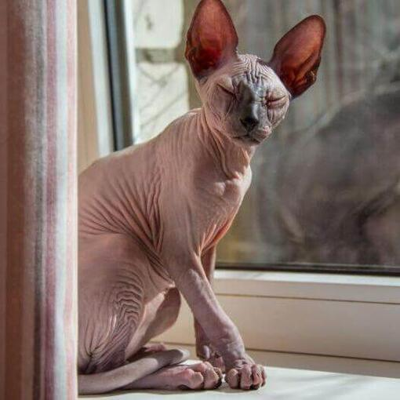
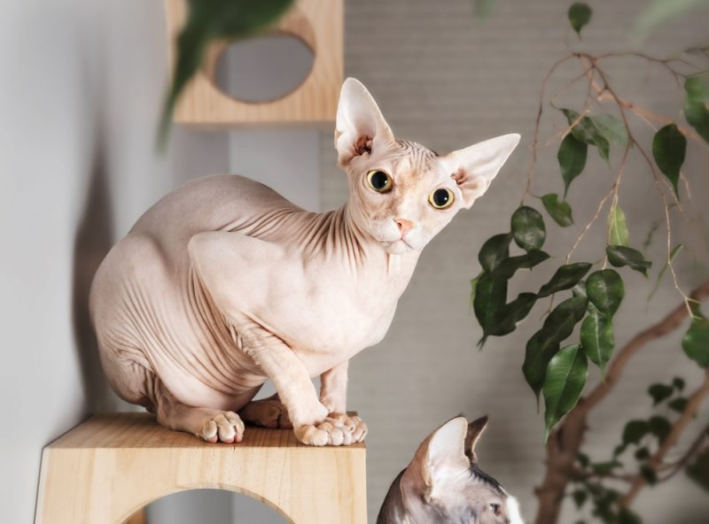
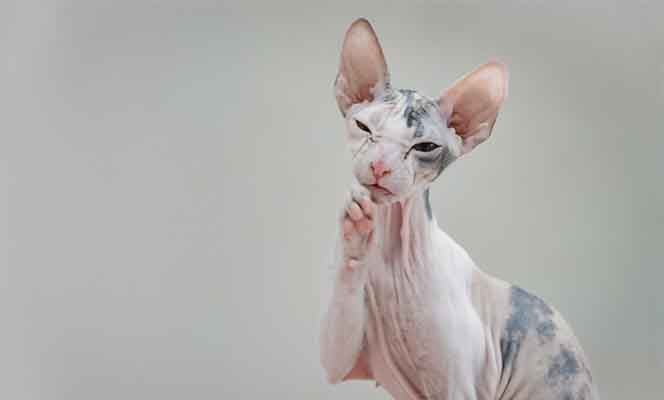
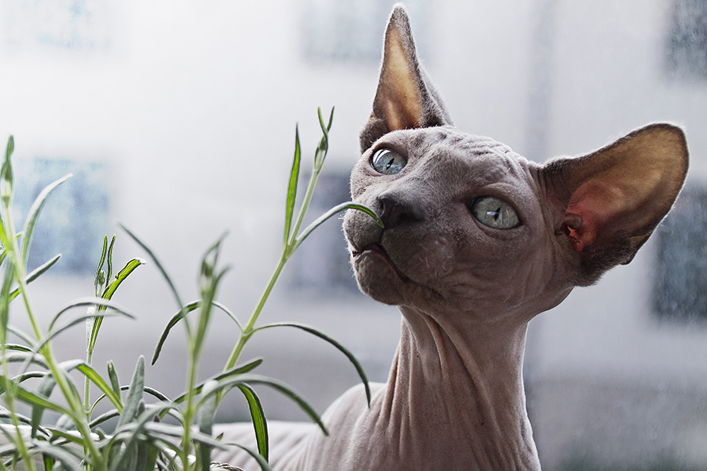
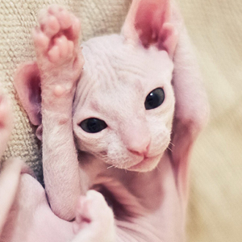

|
SPHYNX O GATO ESFINGE
|
||
Origen |
Personalidad |
Aspecto |
| País de origen: Canadá Otros nombres:Gato esfinge, Gato egipcio, gato canadiense sin pelo Hace generaciones que se conocen gatos sin pelo; se dice que los aztecas tenían gatos sin pelo. El sphynx es el primer gato sin pelo que ha sido criado específicamente por ese rasgo. El programa de reproducción comenzó en 1966 en Ontario, Canadá, cuando una gata doméstica tuvo un gatito macho sin pelo. Sin embargo, la mayoría de los sphynx actuales descienden de tres gatitos sin pelo encontrados en Toronto en 1978. |
El sphynx es un gato extrovertido y travieso al que le encanta estar con
la gente y que le presten atención. Son gatos muy comunicativos y suelen
dar la bienvenida a sus amos cuando estos llegan a casa.
Son muy listos, juguetones y achuchables. Los gatos egipcios son muy
ronroneadores. Les gusta dormir con sus amos bajo las mantas.
Su temperatura corporal está un grado o dos por encima de la media de los
gatos normales y tienen un apetito voraz para compensar la pérdida de calor.
Como tienen tan poca protección contra los elementos, estos gatos no pueden
quedarse fuera si hace frío, no les gusta sentarse en superficies frías
y les encanta la calefacción. Los gatos que salen al exterior cuando hace
sol pueden necesitar protección solar.
|
Este gato no tiene bigotes ni pestañas. La cabeza recuerda a la del devon rex.
Tiene los ojos hundidos y con forma de limón. El cuerpo tiene una osamenta fina,
aunque es musculoso y tiene un pecho fuerte. Las patas son largas y delgadas;
las delanteras parecen arqueadas por la anchura del pecho. La cola es larga,
estrecha y dura al tacto. Son cálidos y suaves al tacto, por lo que se
han ganado el apodo de < bolsa de agua caliente de ante >.
Tiene arrugas en algunas partes de la cabeza, del cuerpo y de las patas,
pero en el resto del cuerpo la piel es tersa. La pigmentación se ve
claramente en la piel del sphynx. Se aceptan todos los patrones y colores de piel.
|
 |
|
 |
 |
 |
 |
Nutrición |
Aseo |
Salud |
|
Cada gato es único y tiene sus propias filias, fobias y necesidades particulares
en lo que respecta a la comida. Sin embargo, los gatos son carnívoros
y deben obtener 41 nutrientes diferentes y específicos de los alimentos que ingieren.
La proporción de estos nutrientes variará según la edad, el estilo de vida y la
salud en general, por lo que no sorprende que un gatito enérgico y en crecimiento
necesite un equilibrio de nutrientes diferente en su dieta que un gato sénior menos activo.
Otros aspectos que deben tenerse en cuenta son darle la cantidad adecuada de comida
para mantener el <estado físico ideal> según las pautas de alimentación y atender
las preferencias individuales por lo que respecta a las recetas de comida seca o húmeda.
|
Los dueños deben prestar mucha atención y mantener la piel del sphynx limpia y elástica.
Este gato debe bañarse o limpiarse con una esponja cada semana para retirar las secreciones oleosas.
También hay que limpiarle las orejas regularmente para retirar las secreciones y evitar así las
infecciones de oído.
|
Los gatos egipcios son propensos a los problemas cutáneos, incluyendo el desarrollo
de erupciones y de infecciones por hongos. Hay que llevar cuidado y proteger al sphynx
de las quemaduras solares. Como todos los gatos, los sphynx necesitan vacunación que
los proteja de las enfermedades y chequeos veterinarios anuales.
|